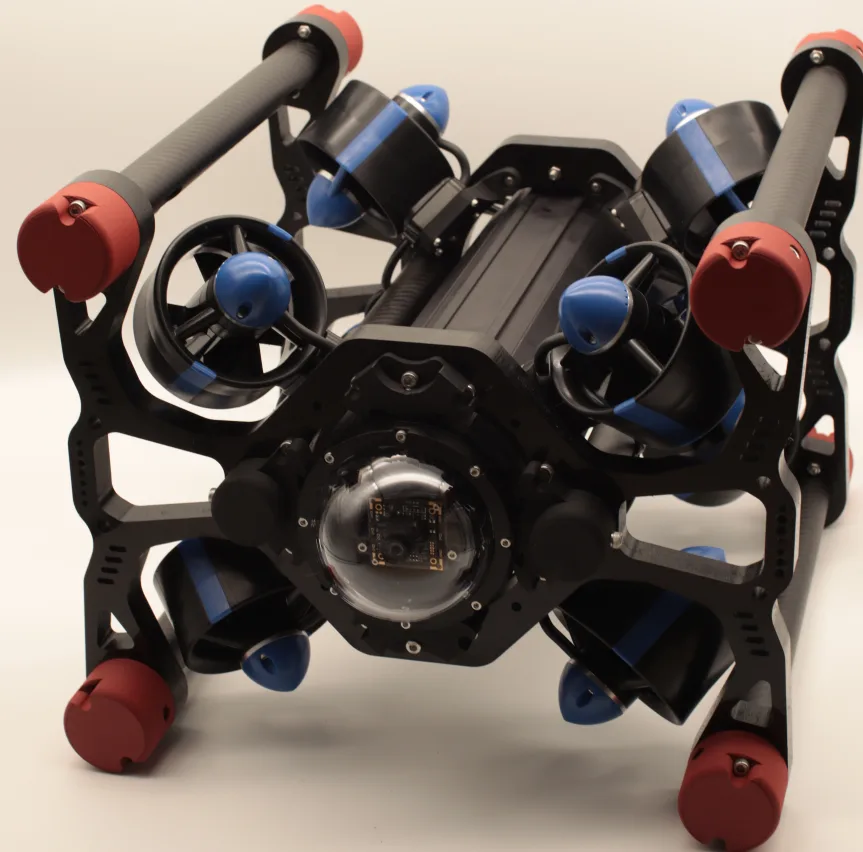

2014-2016
Formation and first project routines成立与早期项目训练
Archive slot for founding members, first workbench photos and early robot project notes.用于放置创始阶段成员、早期工作台照片和首批机器人项目记录。
Team Timeline历届团队
This page is structured as a timeline gallery. Current images are public or local placeholders and should be replaced with verified team photos when available.本页按照片时间轴组织。当前图片为公开资料或本地占位素材，后续应替换为社团确认的历届合影与项目照片。

Timeline Gallery时间轴照片页
These cards define the final structure: period, image, team context, project focus and source note.这些卡片定义最终结构：届别、图片、团队背景、项目方向和资料来源说明。

2014-2016
Archive slot for founding members, first workbench photos and early robot project notes.用于放置创始阶段成员、早期工作台照片和首批机器人项目记录。

2017-2019
A period for underwater robot iterations, competition photos and award-certificate scans. The public article image falls back to local material if unavailable.用于整理水下机器人迭代、赛事照片和获奖证书扫描件。公开文章图片不可访问时会自动回退到本地素材。

2020-2022
Use this slot for MATE ROV documentation, remote collaboration records and system-design photos.用于放置 MATE ROV 技术文档、远程协作记录和系统设计照片。

2023
A focused slot for Qingdao competition travel, field setup, team photos and certificates tied to the 2023 award report.用于放置青岛赛事出行、现场调试、团队合影和与 2023 获奖报道对应的证书。

2024
The latest public materials show the team entering outreach settings while continuing competition practice.最新公开资料显示，团队在继续竞赛训练的同时，也进入科普活动场景。